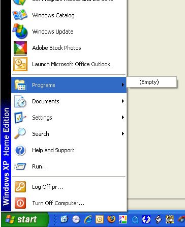

Archives Ceci n'est un bon signe ... April 20, 2008Fun This post was originally written in French. Bug Windows ou Virus ... ceci est surprenant.  Comments 3Didier, 2008-04-20 07:31 C'est le tien ? Didier, 2008-04-20 07:31 Heureusement que t'as acheté un Mac patrice.roulive, 2008-04-20 08:20 C'est le premier truc que je me suis dit. 1. M'en fous dans 5 jours j'ai un Mac. 2. Zut je vais devoir tout réinstaller pour Sarah ;-) 3. Previous postPhoto Slideshow sur la PS3Next postSi c'est pas triste ...

Comments 3
Didier, 2008-04-20 07:31
C'est le tien ?
Didier, 2008-04-20 07:31
Heureusement que t'as acheté un Mac
patrice.roulive, 2008-04-20 08:20
C'est le premier truc que je me suis dit. 1. M'en fous dans 5 jours j'ai un Mac. 2. Zut je vais devoir tout réinstaller pour Sarah ;-) 3.